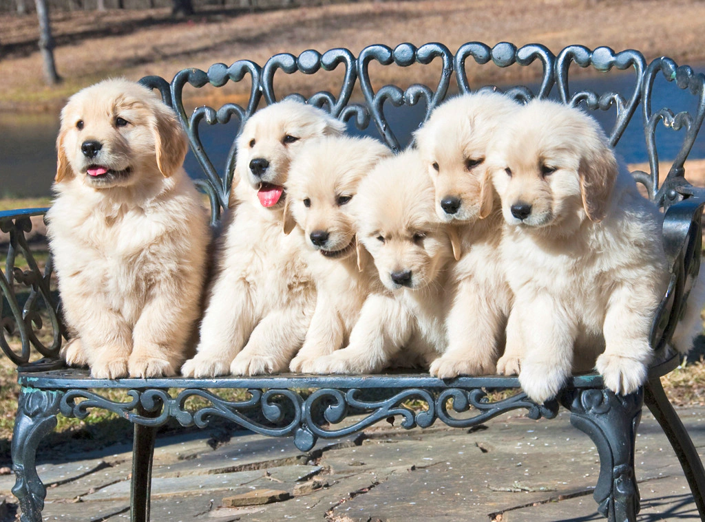

Learn how to take care of you Puppy
Caring for a puppy is a wonderful but demanding responsibility. To make sure your little companion thrives, start by puppy-proofing your home and creating a cozy space for them. Give them top-notch food on a regular schedule for proper nutrition. House training can be challenging, so be patient and stick to a routine. Keep them active with playtime and exercise, and don't forget to introduce them to other dogs and people. Regular grooming, healthcare, and training are all important parts of puppy care. A crate can be a helpful tool for house training and providing a safe space. If your pup has any behavioral problems, it's essential to address them with love and guidance. Make sure to shower your furry friend with affection and attention, and ensure their safety by securing your home. Keep their ID updated, and consider microchipping for extra security. Remember, every puppy is unique, so adapt your care to their individual needs and breed traits. Regular vet check-ups, consistent training, and loads of patience and love are the keys to raising a happy and healthy puppy.
.jpg)